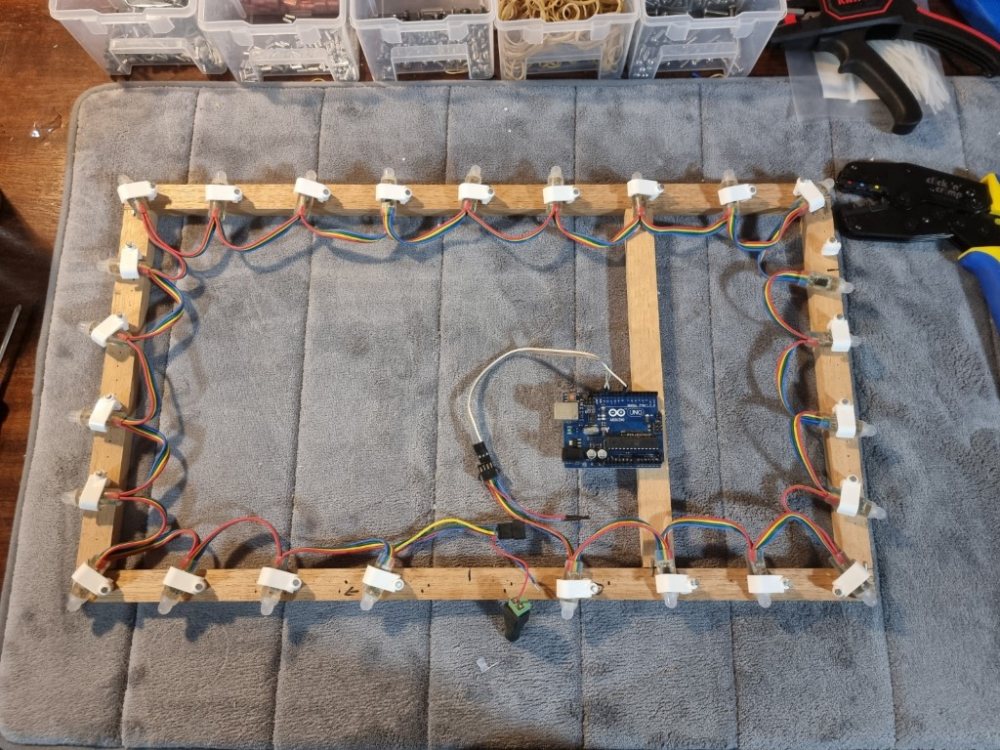

Raspberry Pi Projects
Raspberry Pi
Currently using a Rasbperry Pi model 3b to self host a PiHole instance and PiVPN making use of wireguard.
PiHole is a simple to set up network based ad-blocker. It also acts as my network DHCP server and custom DNS server.
By combing PiHole with PiVPN, the benefits of PiHole can be extended to any device outside of my home network. By making use of an automation program such as Tasker,
my mobile device can connect to the VPN when I leave my home network for seamless use.
Making use of the Raspberry Pi makes this setup incredibly simple and power efficient. I don't have to have my main PC or larger server running to be able to make use of mobile ad-blocking and the low power draw is an added benefit.
The following is a brief guide on how to setup a Pihole/PiVPN combination
Configuration
Start with a fresh install of Raspbian with a static IP. Enabling SSH will allow the Pi to be run headless.
From the command line run the command
curl -sSL https://install.pi-hole.net | bash
As stated in the official documentation, running a script in this way can be potentially dangerous as it allows code to be run on your machine without you seeing it first.
The official documentation linked above provides alternative install options should using the script be of a concern.
Once the script has been run, the PiHole dashboard can be accessed through the browser at either
http://localhost/admin
http://ip-address/admin
Or,
http://pi.hole/admin
Change the password for the dashoard when prompted.
Under Settings > DHCP, tick the box to enable the DHCP server and make sure to disable the DHCP server in your router.
There are many more settings to look through, but this is enough if all you are looking to do is block ads on your local network.
Should you wish for the benefits of PiHole to follow you on your mobile device, PiVPN works extremely well alongside PiHole and is also simple to set up
From the CLI of the Pi running PiHole, run the following command
curl -L https://install.pivpn.io | bash
Again, the official documentation provides alternatives if running a blind script is of concern for you.
Follow the on screen prompts, ensuring the IP addresses that the installer finds are correct, select the "pi" user, and when given the option of Wireguard or OpenVPN select Wireguard.
The protocol will be installed, and the installer will ask you for a port. I used the default port and made note of it, as it will need to be forwarded in the router.
The installer will then say it has found a PiHole installation, and ask you if you want to use it as the DNS. Select yes.
Now it's time to specify how your mobile devices connect to your home network. If your ISP provides a static IP, you can select the public IP shown in the installer.
If your public IP is dynamic, which is quite common, you will need to use a dynamic DNS service.
Duck DNS is a good, free option which I have used for a number of years.
Sign up for a dynamic DNS and link it to your public IP. There are numerous ways to update your DNS when your home public IP address changes but that is outside the scope of this document.
Select DNS entry in the installer, and then provide the dynamic DNS you created. If using Duck DNS it will be example.duckdns.org
Continue the installer and reboot when asked.
We now need to add a profile for your mobile device
From the command line, enter
pivpn -a
example.conf will be generated and placed into
home/pi/configs
To use the qr generator, enter
pivpn -qr [profilename]
Install the Wireguard app from your chosen app store, hit the floating "+" sign to add a new profile, select the qr code option and scan the previously generated qr code.
Thats it. When using mobile data you can connect to your home network using Wireguard and enjoy the benefits the PiHole provides at home.
Other Raspberry Pi Projects
I have used Raspberry Pis for many projects
- RetroPi for game emulation. Recently 100% Tony Hawk's Pro Skater 2. Lets play graffiti.
- Paired with a webcam in my garage to check I shut the garage door when away from home. Intending to modify the control box to allow for opening/closing the door via a mobile app.
- File server. At numerous points I have set up temporary file servers using a USB drive and RPi.
- Aspirations to use my Pi Zero w as a battery powered "ring" style doorbell, have been saving for a 3D printer to enable more projects like this
- General linux computing. I find great joy in such a small device on the network always available for a quick bit of linux
- Many others
being a part of his computing journey and I plan to make use of the extensive learning projects tailored for the RPi.
Arduino Project
My experience with microcontrollers is relatively limited, but I have used them in the past.
My favorite Arduino project to date is a DIY ambient lighting rig that hung on the back of a monitor. An Arduino Uno and a basic sketch took small screenshots around the edge of the screen, calculated the average colour, and output that colour
to a number of RGB LEDs mounted to a frame. The result was a dynamic ambient lighting system that projected the edge colours of whatever program was running onto the wall behind the monitor.

This project was an excellent introduction to the Arduino and sketches. The only reason I don't use the rig anymore is due to monitor size upgrades.
Other Projects
I have many other projects.
- As a hobbyist musician, effect pedals are of particular interest to me. I have recently constructed a small dual footswitch for use in conjunction with other pedals. This was a very simple project making use of a couple of DPDT
switches, some SPDT toggle switches, a 1/4in stereo input jack, and an enclosure. The result saved me $80 and gave me that feeling you get when you make something yourself. - I self host numerous applications on my home server, recently discovering Docker. An example of some things I run;
- Linkding - a bookmark organiser with access from any device
- A minecraft server making use of geyserMC, a translation layer that allows my son to join from the Playstation while I play on Java edition
- Paperless - Centralised document storage I use for organising my university textbooks and resources
- Syncthing - For automated sync of documents between various devices
- Bitwarden - An open source password manager
- Gitea - A self hosted Git service, primarily used for storage of notes
- I am passionate about open source software, In the future I aim to contribute to more projects
- I supply control panel assemblies to a local manufacturing company as a side job
- I am currently restoring an old drumkit
- This page you are viewing now. I created this basic page to showcase a handful of small of projects to bundle with my application for a position with Core Electronics.
I truly enjoy tinkering and the opportunity to join a startup with shared ideas is very exciting.
I look forward to discussing the position with you at your earliest convinience.